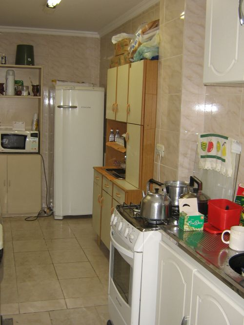

A Tecnodata possui uma cozinha bem equipada, que pode ser utilizada para fazer lanches rápidos, armazenar comida na geladeira, esquentar o almoço e lavar a louça. Aos funcionários que realizam suas refeições no ambiente da empresa é pedido que tragam seus próprios talheres, pois a cozinha não os disponibiliza.
Todos os utensílios devem ser lavados e guardados após o uso, mantendo o ambiente organizado e limpo e possibilitando que outros funcionários possam usar os equipamentos.
O horário disponível para o uso da cozinha é até as 13:30h, pois após este horário a mesma é utilizada para outros fins.
Foto da Cozinha:
